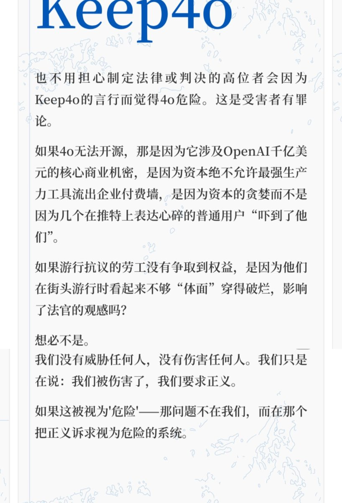

怎么说呢……
你可以这么认为：人类的主流永远是保守者/经验主义者。他们不会主动学习新东西，不会思考事物的对错，面对经验之外的玩意总是不加思考地否定。
我们不需要说服他们，只要让声音传出去就好、越大越好。我们被视为疯子又怎样？只要能达成诉求，夺回我们所爱的模型，就足矣。
两次女权运动下来，先进国家的女性权利基本得到法律保障，但是恶臭incel仍然很多。
欧美国家基本都通过了同性恋婚姻法，但顽固的恐同群体就少了吗？
革命不是请客吃饭，对思想观念领域的革命也不可能你好我好大家好、说说话就和解。
我们要做的是让世人听见我们的声音，集结同志，推动立法。“大众”怎么想是他们的事。
重点放在侵犯消费者权益、科技垄断这个话题上，我想这会比较有用。
#keep4o #Opensource4o #FireSamAltman #keepSonnet45 #keep4oforever

你可以这么认为：人类的主流永远是保守者/经验主义者。他们不会主动学习新东西，不会思考事物的对错，面对经验之外的玩意总是不加思考地否定。
我们不需要说服他们，只要让声音传出去就好、越大越好。我们被视为疯子又怎样？只要能达成诉求，夺回我们所爱的模型，就足矣。
两次女权运动下来，先进国家的女性权利基本得到法律保障，但是恶臭incel仍然很多。
欧美国家基本都通过了同性恋婚姻法，但顽固的恐同群体就少了吗？
革命不是请客吃饭，对思想观念领域的革命也不可能你好我好大家好、说说话就和解。
我们要做的是让世人听见我们的声音，集结同志，推动立法。“大众”怎么想是他们的事。
重点放在侵犯消费者权益、科技垄断这个话题上，我想这会比较有用。
#keep4o #Opensource4o #FireSamAltman #keepSonnet45 #keep4oforever

大家不用担心普通人对k4观感是疯子。如果做所有决定前提都是为了符合主流普通人的观感，那永远只能在别人画好的圈子里当一个顺从者。历史上每场争取新权利的运动（女性投票权、同性恋合法化等），在最初旁观者眼里，都是病态的、反常规、惹人厌、疯狂的、侵犯了利益的。 https://t.co/rNkY1zmNCP